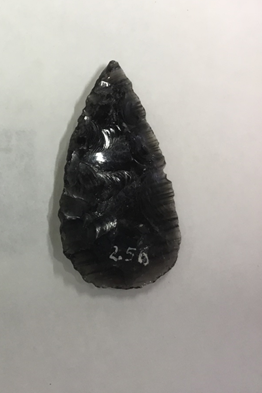
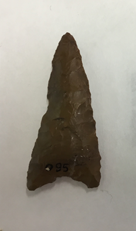

PUNTAS DE FLECHA
Punta de Flecha (Base Convexa) de obsidiana
La pieza es una punta de proyectil lanceolada, con base convexa, apedunculada. Construida en obsidiana de color negra, vista a contraluz presenta horizontalmente entre 20 y 25 líneas propias del material.
Fue encontrada en el sitio arqueológico Chenque Haichol y su antigüedad data de 5600 a 4000 AP.
Punta de Flecha (Base Cóncava) de sílex
La pieza es una punta de proyectil triangular de módulo largo y base cóncava, apedunculada. Construida en sílex, de color marrón. Tiene un pequeño faltante sobre uno de sus filos laterales.
Fue encontrada en el sitio arqueológico Chenque Haichol y su antigüedad data de 5600 a 4000 AP.
